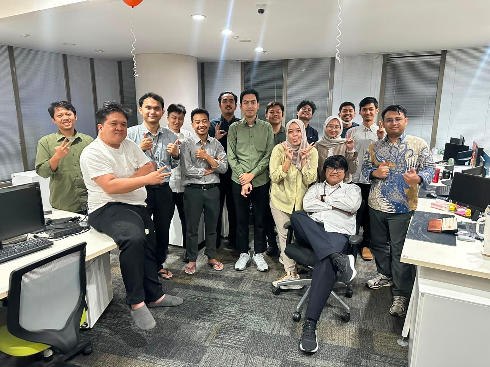
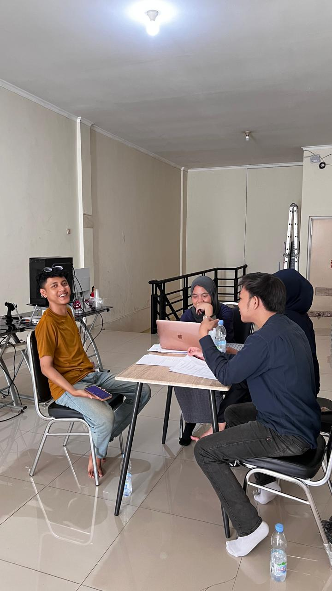

Work Experience
Riwayat Karir
IT L2 Management Service
PT Bank Negara Indonesia (Persero) – Jakarta, Indonesia
- Monitoring APM, Sanity Check Application dan Cek Config Application/Service.
- Membuat daily dan monthly report aplikasi serta dokumentasi incident aplikasi.
- Analisis dan penanganan troubleshoot sesuai dengan aturan SOP yang berlaku.
- Memastikan stabilitas layanan untuk mencegah downtime dan memastikan sistem berjalan.
- Membantu import data transaksi KCLN Core to Aplikasi.
- Melakukan aktivitas SOSB untuk memastikan server utama dan backup berfungsi dengan baik.
Dokumentasi Kegiatan / Project:


[Ruang Gambar Dokumentasi 2]
Data Entry (Magang)
PT Serikat Kosmetika Plastindo – Jakarta, Indonesia
- Input dan update data produk ke dalam website perusahaan (500 Data/3 Minggu).
- Mensinkronisasikan data sistem sesuai dengan data fisik pada gudang perusahaan.
- Melaporkan bug sistem website untuk memaksimalkan kenyamanan pengguna.
- Menyusun laporan kerja dan report kepada pembimbing dan manajer.
Dokumentasi Data Entry:

[Dokumentasi Aktivitas Data Entry]
Media Sosial (Magang)
LPO Muhammadiyah – Jakarta, Indonesia
- Meriset kabar dan kegiatan olahraga nasional/internasional.
- Membuat template infografis media sosial Instagram dan mengolah informasi menjadi tampilan menarik.
ACOS (Assistant Chief of Store)
PT Sumber Alfaria Trijaya, Tbk. – Jakarta, Indonesia
- Membuat strategi sales dan komunikasi hingga penjualan toko melampaui target 4 bulan berturut.
- Mengecek stok fisik dan sistem untuk pencegahan kerugian serta mengontrol kualitas produk.
- Menerima proses barang masuk dan retur sesuai dengan faktur aset.
- Menjalankan quality checking untuk menjaga kualitas produk dan kebersihan toko untuk kenyamanan konsumen.
- Mengecek barang exp dan retur barang untuk memberikan kenyamanan untuk konsumen dan nama baik perusahaan.
- Menyusun kelengkapan administrasi dan keuangan harian hasil penjualan.